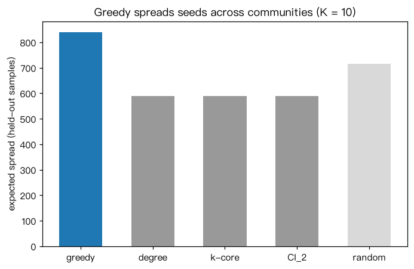

Example12 / 14
影响力最大化——贪心算法与启发式中心性
传播模型：每条边以概率 p 处于“通”状态（键渗流；等价于固定感染期的 SIR，也是独立级联在无向图上的常用简化）。 种子集合 S 的传播范围 = 含有至少一个种子的“通边分支”的节点总数，用 R 个随机样本平均（共同随机数）。 在同一组样本上做贪心选种：每一步加入边际增益最大的节点；期望传播范围是子模函数，贪心有 (1-1/e) 保证。 与度最高、k-核最高、集体影响 CI_2 = (k_i-1) Σ_{d(i,j)=2} (k_j-1)（Morone 与 Makse 2015）比较， 最后在另一组新样本上评估，避免“在训练样本上挑出幸运节点”的乐观偏差。 网络：一个稠密大社团（枢纽都在这里）+ 7 个小社团，社团间只有极少的桥。 解读：度、k-核、CI 的前 K 名全部挤在大社团里，彼此重叠，甚至不如随机选种；贪心会把种子分散到各社团。
Output输出图

Output文字输出
贪心 期望传播范围 = 840.0 度 期望传播范围 = 589.9 k-核 期望传播范围 = 589.9 CI_2 期望传播范围 = 589.6 随机 期望传播范围 = 716.0
Code代码
# 传播模型：每条边以概率 p 处于“通”状态（键渗流；等价于固定感染期的 SIR，也是独立级联在无向图上的常用简化）。
# 种子集合 S 的传播范围 = 含有至少一个种子的“通边分支”的节点总数，用 R 个随机样本平均（共同随机数）。
# 在同一组样本上做贪心选种：每一步加入边际增益最大的节点；期望传播范围是子模函数，贪心有 (1-1/e) 保证。
# 与度最高、k-核最高、集体影响 CI_2 = (k_i-1) Σ_{d(i,j)=2} (k_j-1)（Morone 与 Makse 2015）比较，
# 最后在另一组新样本上评估，避免“在训练样本上挑出幸运节点”的乐观偏差。
# 网络：一个稠密大社团（枢纽都在这里）+ 7 个小社团，社团间只有极少的桥。
# 解读：度、k-核、CI 的前 K 名全部挤在大社团里，彼此重叠，甚至不如随机选种；贪心会把种子分散到各社团。
import numpy as np
import networkx as nx
import scipy.sparse as sp
from scipy.sparse.csgraph import connected_components
sizes = [600] + [200] * 7 # 一个稠密大社团 + 7 个较稀疏的小社团
P = [[(0.02 if i == 0 else 0.03) if i == j else 0.00002 for j in range(8)] for i in range(8)]
G = nx.stochastic_block_model(sizes, P, seed=7)
N, K = G.number_of_nodes(), 10
edges = np.array(G.edges())
k = np.array([d for _, d in G.degree()], float)
p = 0.2 # 每条边“通”的概率
def samples(R, rng):
labs, sizes = [], []
for _ in range(R):
e = edges[rng.random(len(edges)) < p]
A = sp.coo_matrix((np.ones(len(e)), (e[:, 0], e[:, 1])), shape=(N, N))
_, lab = connected_components(A, directed=False)
labs.append(lab); sizes.append(np.bincount(lab))
return labs, sizes
def spread(S, labs, sizes):
return np.mean([sz[np.unique(lab[list(S)])].sum() for lab, sz in zip(labs, sizes)])
train = samples(200, np.random.default_rng(0))
seeds = []
covered = [np.zeros(len(sz), bool) for sz in train[1]]
for _ in range(K):
gain = np.zeros(N)
for lab, sz, cov in zip(*train, covered):
gain += np.where(cov[lab], 0, sz[lab])
gain[seeds] = -1
v = int(np.argmax(gain)); seeds.append(v)
for lab, cov in zip(train[0], covered):
cov[lab[v]] = True
deg = dict(G.degree()); core = nx.core_number(G)
ci = {}
for i in G:
ring = [j for j, d in nx.single_source_shortest_path_length(G, i, cutoff=2).items() if d == 2]
ci[i] = (deg[i] - 1) * sum(deg[j] - 1 for j in ring)
top = lambda score: sorted(G, key=lambda v: (-score[v], -deg[v]))[:K]
test = samples(500, np.random.default_rng(1))
rng = np.random.default_rng(2)
vals = []
for name, S in [("贪心", seeds), ("度", top(deg)), ("k-核", top(core)), ("CI_2", top(ci)),
("随机", list(rng.choice(N, K, replace=False)))]:
vals.append(spread(S, *test))
print("%-6s 期望传播范围 = %.1f" % (name, vals[-1]))
import matplotlib.pyplot as plt
fig, ax = plt.subplots(figsize=(6.4, 4.2))
ax.bar(["greedy", "degree", "k-core", "CI_2", "random"], vals,
color=["tab:blue", "0.6", "0.6", "0.6", "0.85"], width=0.6)
ax.set_ylabel("expected spread (held-out samples)")
ax.set_title("Greedy spreads seeds across communities (K = %d)" % K)
plt.tight_layout(); plt.show()Run在浏览器中运行
首次加载 Python 环境约需 20–40 秒；可以修改参数后重新运行。